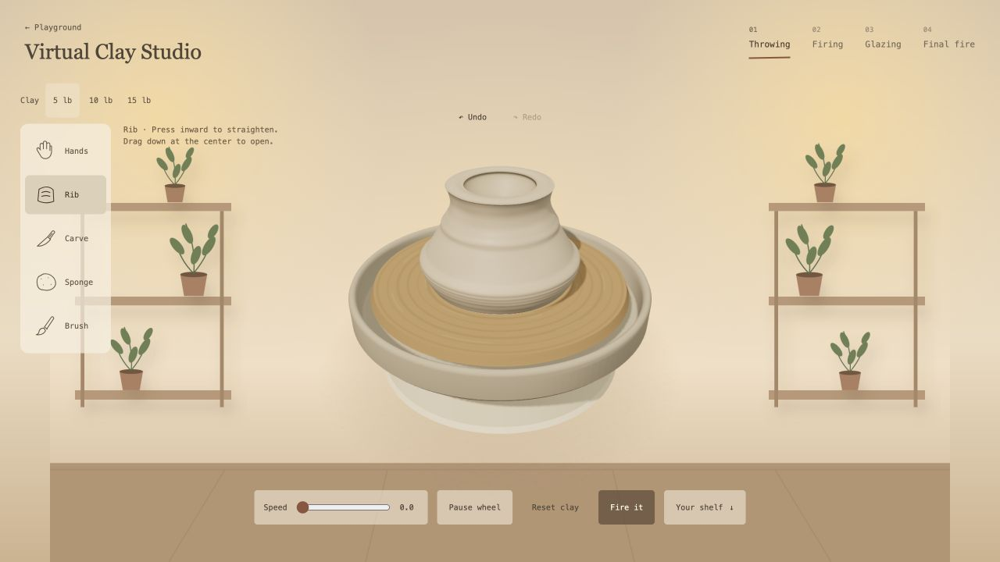
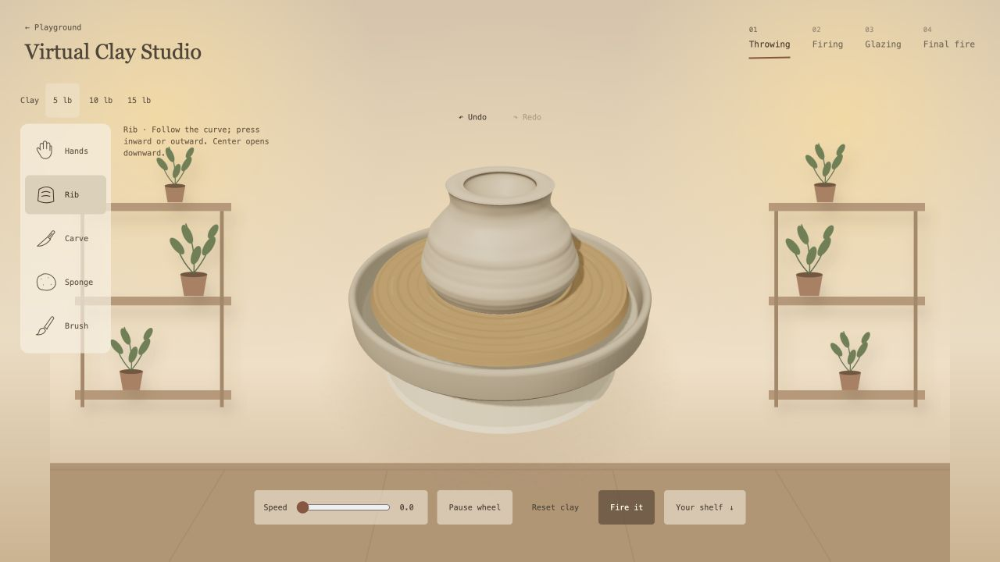
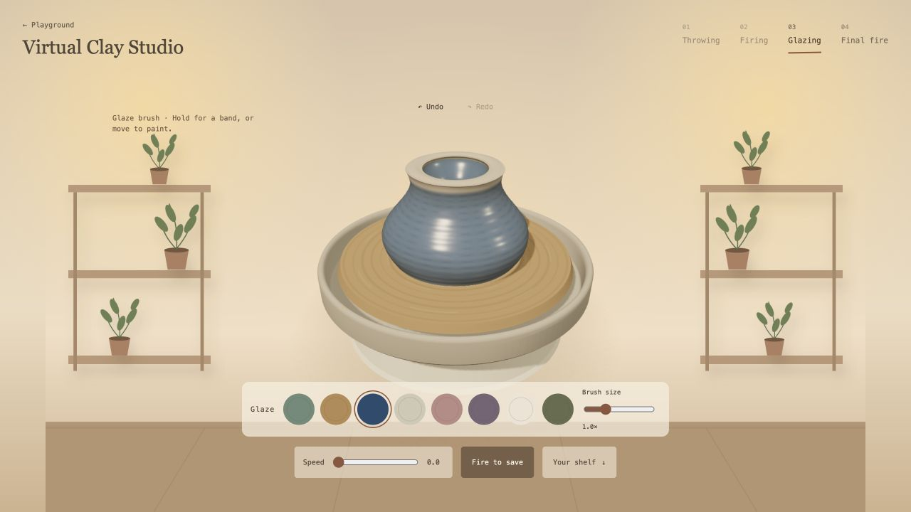
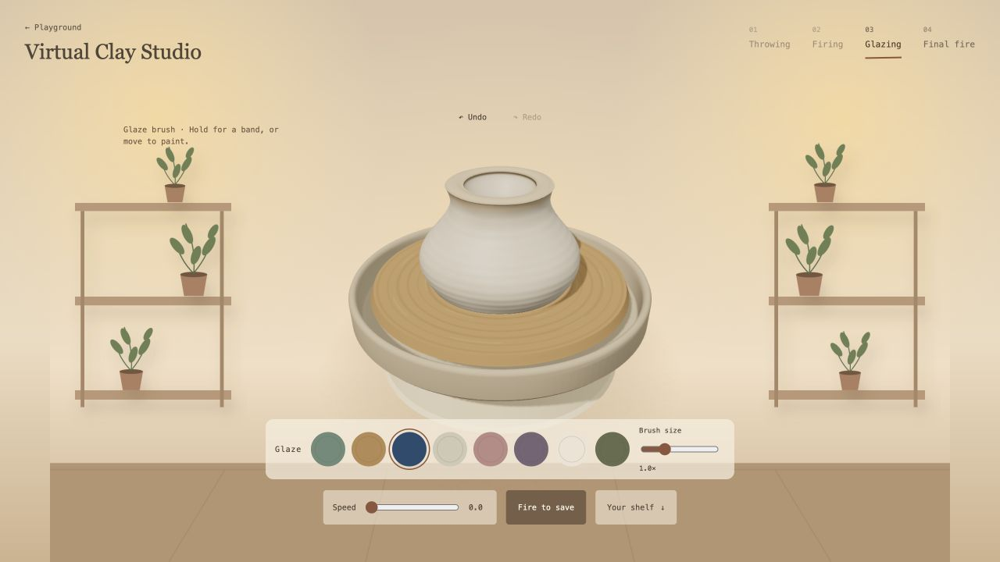
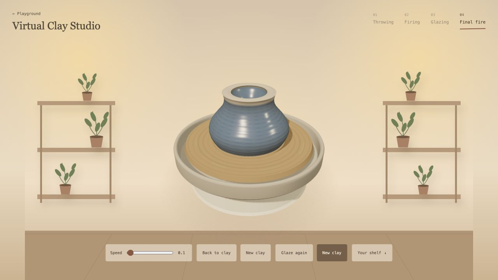

Virtual Clay Studio · local review
Two changes, saved as local checkpoints. Production is unchanged. Try the studio →
Rib · same contour and pressure sequence

Before: pressure follows a calculated straight target.
After: curved contour and directional pressure, with bounded gestures.Glaze · application versus final firing

Before: already glossy during application.
Now: chalky, matte coating before final fire.
Now: saturated color and glassy highlights after final fire.Shape/paint Undo–Redo, cavity bounds, water, smoothing, carving and firing guards passed the covered checks. Browser phone QA: 390 × 844, with animation running.